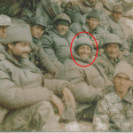

❝The enemies are only 50 yards from us. We are heavily outnumbered. We are under devastating fire. I shall not withdraw an inch but will fight to our last man and our last round.❞
About
"Captain Manoj Pandey, belonged to Rudha village in Kamlapur tehsil of Sitapur district in Uttar Pradesh. Son of Shri Gopi Chand Pandey and Smt Mohini Pandey, Capt Manoj was the eldest among three brothers and a sister. Even as a child he was quite gutsy and would often amaze the elders with his acts of bravery. Despite having gutsy temperament, he was good in academics too. He studied from UP Sainik School, Lucknow wherein his dream of joining the Army took firm shape and the foundation of his future life was laid. He had a keen interest in sports too and excelled in boxing and bodybuilding in particular. Subsequently, he got selected to join the National Defence Academy in his pursuit of realizing his dream of donning the Army uniform as an officer. He joined the 90th course of NDA and got commissioned into 1/11 Gorkha Rifles of the Indian Army, a unit known for its gallant soldiers and various heroic exploits."
Battle of Badgam
❝On 03 Nov 1947, Maj Somnath Sharma and his company were ordered to reach Badgam village, to take charge of the situation there. His left hand was injured and in a plaster cast, as he had broken it in a hockey match. But he insisted on being with his company in combat. Badgam was one of those routes through which Pakistani raiders were marching towards Srinagar. Two companies of well-equipped soldiers were given the charge of Badgam front, Company A of 4 Kumaon under the command of Maj Somnath and Company D of 1 Para Kumaon led by Capt Ronald Wood. The units deployed were under the command of Brig L P Sen. In the village, a group of 500 raiders approached Badgam from Gulmarg and soon surrounded the company from three sides. Maj Sharma’s company was under heavy fire and mortar bombardment and sustained heavy casualties. They were massively outnumbered seven to one, but Maj Sharma knew that the Badgam village was very crucial and loss in their position would make the city of Srinagar and the airport vulnerable..❞
Awards
- Lieutenant Manoj Kumar Pandey, a young officer of the 1/11 Gorkha Rifles, took part in a series of boldly led attacks during Operation Vijay, forcing back the intruders with heavy losses in Batalik including the capture of Jaubar Top. His finest hour was during the advance to Khalubar, when he was Number 5 Platoon Commander. On the night of 2/3 July 1999, as the platoon approached its final objective, it came under heavy and intense enemy fire from the surrounding heights. The officer was tasked to clear the interfering enemy positions, so as to prevent his battalion from getting day lighted, being in a vulnerable position.